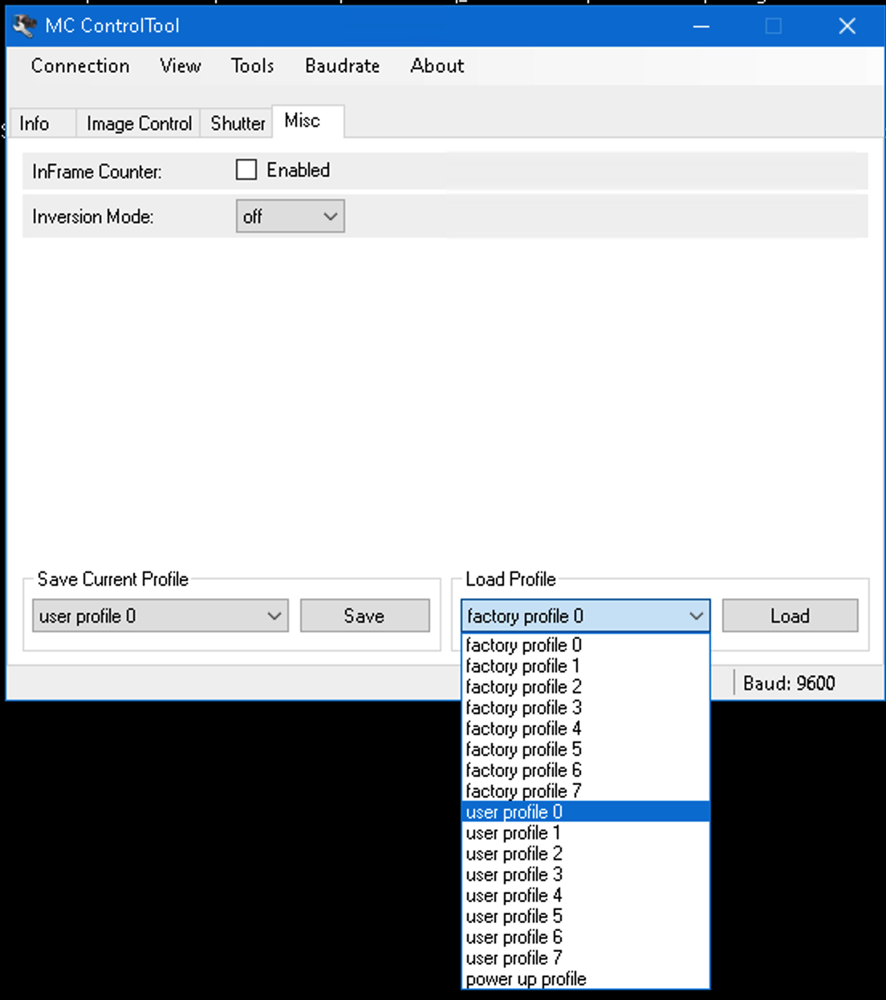

This will show the steps in order to run a zebrafish protocol using the z-tracket pipeline.
MC Control Tools and double click
Port 0
user profile 0. To
see if you have maximised the camera frame rate go to the shutter tab
and see that the 700 fps is selected.
Open up the behavioural tracking software
e.g. C:\Users\orger\Desktop\Tom\Adriens_pipeline\z_tracker\Tracker
double click FishTracker.sln.
Fill up the arena with E3 solution using a pipette with a filter attached to the end.
Start the .sln
Click start on the panel to switch on the camera.

Subtract Background box and Tail Tracking then
selecting the Subtracted Image option on the far right of
the panel. If subtracted correctly return to the raw data
view, otherwise recalculate the background and update.


Open up the Stimuli Server Controller. You should
load the shader protocol, this should be in the directory
C:\Users\orger\Desktop\Adrien\shader_and_stimuli_protocol\Protocol\Protocol_CatchAllBouts.txt.
Then Open sublime and look for a file with a command
move 505 143 403 1 (the number will be different for each
set-up). Enter this command into the stimuli controller panel

There are two main files Form1.cs and
CatchAllBoutsProtocol.cs
To map your stimulus protocol with the behavioural code you need to
open the Form1.cs and provide the name of your stimulus
sequence filename (note this must be saved in the desktop).

An example stimulus sequence would be:
UniformLight UniformLight_Color ForwardOMR ForwardOMR_Speed RotationOMR RotationOMR_Speed RotationOMR_Direction ApproachingDot ApproachingDot_Direction LoomingDot LoomingDot_Direction Beep Beep_Frequency Beep_Duration Time2Wait
1 1 0 0 0 0 0 0 0 0 0 0 0 0 6000
0 0 0 0 0 0 0 1 88 0 0 0 0 0 4000
1 1 0 0 0 0 0 0 0 0 0 0 0 0 10000
0 0 0 0 0 0 0 1 266 0 0 0 0 0 5000
1 1 0 0 0 0 0 0 0 0 0 0 0 0 10000
0 0 0 0 0 0 0 1 273 0 0 0 0 0 9000
1 1 0 0 0 0 0 0 0 0 0 0 0 0 10000
0 0 0 0 0 0 0 1 90 0 0 0 0 0 14000
1 1 0 0 0 0 0 0 0 0 0 0 0 0 10000For the case where you want to use a UV flash rather than the beep
stimuli. Open CatchAllBoutsProtocol.cs and comment out
Send($"{trial.Beep_Frequency},{trial.Beep_Duration}"); and
instead enter
Send($"STIM 2 0 {trial.Beep_Duration} {trial.Beep_Frequency} 1 1");.
This will be the alternative command sent to the arduino.